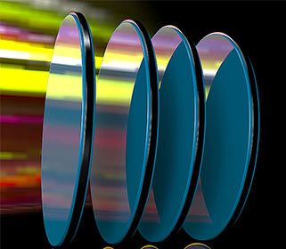

Company profile:
Iridian Spectral Technologies

Leader in Optical Filter Solutions
Iridian Spectral Technologies
2700 Swansea Cres.
Ottawa, Ontario K1G 6R8
Canada
| Tel.: | +1 613 741 4513 |
| Fax: | +1 613 741 9986 |
| E-mail: | |
| Website: | www.iridian.ca |
| Social media: | LinkedIn, Twitter |
| Quality certification: | ISO 9001:2015 |
Company Description
Iridian provides optical thin-film filter solutions and coating services to a wide variety of industrial and research sectors. The company is a leading global supplier for applications in telecommunications, spectroscopy (Raman, fluorescence, and flow cytometry), biomedical imaging, endoscopy imaging, sensing, display and entertainment (glasses for 3D cinema, display coatings). Our optical filters and coatings cover the spectral range from UV 300 nm to LWIR 10 μm. Our products include narrow bandpass filters, steep edge long- or shortpass filters, dichroic edge filter, notch filter, multi-zone filter and other special coating filters.
Iridian Spectral Technologies has the following distributors:
- Tokyo Instruments: Japan
- Shanghai Realbroad Technology: China
- Rico Optec: China
- Hana Enterprise: Korea
- Lunox: Korea
- Protrustech: Taiwan
- Futuristic International: India
- Laser Lines: UK
Products
| Product | Description |
|---|---|
| anti-reflection coatings | Iridian provides coating services for a variety of component materials such as glass, silicon, semiconductors and certain plastic substrates or films. Precision coatings can be applied to beam-splitters, prisms, lenses, mirrors, windows, ferrules and laser facets. Both prototype volume and high volume capability is available. Coating types include simple anti-reflection (ARs) and broadband coatings. |
| black coatings | Iridian’s stray light absorbers work using the principle of optical interference and can be designed for almost any wavelength range and over different angles of incidence. These coatings are made of metal and oxide materials making them especially robust with low out gassing properties. Iridian’s black absorbers have been used in space applications for many years to provide high contrast surfaces. In addition, they have been used for the inside of optical instruments to reduce stray light. These absorbers can be deposited onto metal foils, cut up and applied to different surfaces or applied directly onto an optical component and patterned. |
| infrared optics |  Iridian’s SWIR, MWIR and LWIR bandpass filters are designed to optimize detection of spectral emission lines. These filters are deposited using energetic sputtering, which makes them very hard and durable. The resulting filters also have exceptionally high transmittance levels and blocking from the visible to the LWIR. Iridian has off-the-shelf band pass filters for many of the wavelengths commonly used for gas detection. Available gas lines include H2O, CH4, CO2, CO, N2O and O3. Filters for other wavelengths can also be supplied. |
| optical filters |  Iridian Spectral Technologies is a leading global supplier for applications in telecommunications, spectroscopy (Raman, fluorescence, and flow cytometry), biomedical imaging, endoscopy imaging, sensing, display and entertainment (glasses for 3D cinema, display coatings). Our optical filters and coatings cover the spectral range from UV 300 nm to LWIR 10 μm. Our products include narrow bandpass filters, steep edge long- or shortpass filters, dichroic edge filter, notch filter, multi-zone filter and other special coating filters. See also our white paper on The Right Filter Is Key to Lower-Cost and Faster Time-to-Market MWIR Equipment! |
| custom optics | |
| dichroic mirrors | |
| dielectric coatings | |
| dielectric mirrors |
Promotions

Information of Iridian Spectral Technologies Appears on the Following Pages
Company profile (this page)
Pages with Suppliers for Products
anti-reflection coatings, black coatings, custom optics, dichroic mirrors, dielectric coatings, dielectric mirrors, infrared optics, optical filters
Encyclopedia Articles
anti-reflection coatings, optical filters
Profiles of Other Suppliers
Iridian Spectral Technologies is shown as alternative supplier on 156 pages of other suppliers not having an ad package.
Other Pages
The banner which is included in the ad package will randomly appear on various pages.
On various pages, a banner can randomly show up which displays a random selection of logos of suppliers with an ad package.